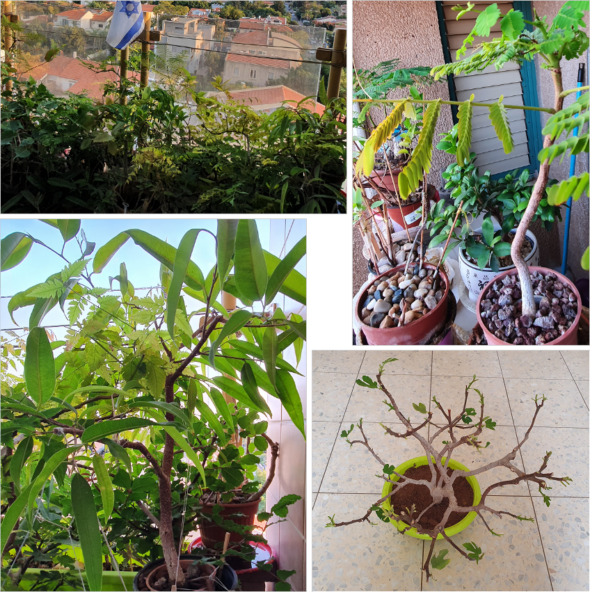

I am an Experienced Functional QA Engineer and Automation Developer » I am Looking for a new position (focus on Automation)
➜ My Linkedin – check it out, and feel free contact me...
Please explore my exemplary Automation Project on My Portfolio – also, feel free to inspect My Code on the following GIT Repo
Elad Luz » elad.luz@gmail.com
About Myself
Personal note
To begin with, I know its a cliché – yet still, I hope that this short & candid introduction, leaves a good impression about myself ... 🙂
- I'm a certified Professional Software QA, with 17 years hands-on experience Testing Client \ Server (also Linux) Applications.
- Products I worked on, were deployed on varied Platforms with Complex Architectures (including on 'Cloud', with micro-services).
- Products' Relevant Data (being used for testing), resided on several kind of Data·Bases (including both SQL & Non·SQL DBs).
- I got extensive experience in Test Planning & Execution of Functionality, E2E, UI, Data Correctness, System and Integrations.
- During the last 2 years as a QA, I have been writing UI Automation Tests, using Selenium WebDriver (with Java and TestNG).
- I have Methodological & Technical Knowledge, an Eye for Details, System-wide perspective & Understanding of Business Logic.
- I understand the QA role with-in the SW Development Life-Cycle & well experienced working in Agile. Got communication skills.
- I'm a Team-player, and worked as part of several Dev-Squads. I know the value of Hard Work, Dedication & Passion for Quality.
- I believe in a Pro-Active 'Get Things Done' approach - and Strive to make each tested Product, meet the Best possible Quality.
- I'm Reliable, Accountable, Motivated, Independent (needing minimal supervision) and always Meet my Deadlines! AND NOW –
I'm looking for a new Position which will challenge my skills & mainly allow my Automation potential to continue growing.
👉 Recommenders (former directors, managers & peers) – Available, and would be supplied upon request with advance notice.
My Skills & Knowlage
Following skills, are those mostly relevant for My job as a Software QA – Automation & Functional Test Engineer
- Automation Tests : Write Tests and related Infra using Java + Selenium, TestNG, GIT, Maven, Jenkins & more
- My Automation project : View Portfolio section below, to see the scope & depth of knowlage I have in this field
- Manual Tests : Functional, E2E, Web \ Mobile Apps, UI, API, Compatibility, Correctness, Security, Integrations
- API : SoapUI, Postman (and also – soon, I'm about to start a course of API Automation, using RestAssured)
- Tools : JIRA, Quality Center, ClearQuest, Bugzilla -and- many other Tools (used during the process of testing)
- Network : Fiddler \ Wire Shark sniffers, Browser Developers tool. Protocols (as Tester) : HTTP & TCP/IP, Rest
- Databases : Relational Oracle, MS-SQL, Postgre, Vertica | Non-SQL Redis, Mongo, Aerospike, ElasticSearch
- Operating Systems : Windows, Linux
- Languages : Hebrew (mother tongue), English (as mother tongue – excellent written & spoken)
Work Experience
06/2018 – 07/2022 | Cybereason : Test Automation Engineer & Functional QA
I Worked on a Cyber Security Defensive EDR-System (aimed to detect & prevent cyber attacks). Product deployed on GCP cloud, with Linux servers & Dockerized microservices, Configured using Consul & Mongo, and its Data stored in Aerospike & ElasticSearch.
I performed both Automation & Functional QA tasks, as part of the Data-infra & HUNT solution Dev-Squad.
Worked in Agile Methodologies (scrum teams & sprints of bite-size features, quick to reach production etc).
- Automation (using Selenium & Java): Automated the Functional E2E Sanity-suite Test-cases, for CI Nightly-run:
- Implement & Automate E2E Test Cases of UI Functionality for Full Coverage, and add relevant Page elements to INFRA
- Execute & Monitor the Jenkins Nightly job, and Run Test suite on-demand, upon each Sanity Cycle & Check any Failure
- Functional (working with JIRA): Performed all Manual QA tasks of the Hunt-Investigation UI solution:
- Review Features' Design and Requirements (with stakeholders: Product, Data Architect, UX & Developers)
- Design Test Plan with Functional E2E Test Cases (STP \ STD) for full Coverage of Spec docs (SRD \ SRS)
- Execution of – Sanity (before production), Progression (for each new feature) & Regression testing cycles
- Failure Analysis of issues found, Open Bugs, Validate Fixes & Conclude Results in Status Report (STR)
- Deploy Environments (GCP \ Linux VMs), Configure (in Consul), integrate (with Docker microservices)
- Knowledge Transfer to Train new employees, Wrote How-to Wikis on a shared location (Confluence)
👉 Recommenders (former directors, managers & peers) – Available, and would be supplied upon request, with advance notice.
09/2012 – 01/2018 | HPE ( former hp mercury ) : Senior Software QA Engineer
Worked on an Apps' Monitoring Product (deployed on Linux Servers with DBs: Vertica, PostgreSQL, Radis), for Tracking & Measure User Experience on Mobile and Web Applications (availability, performance, response-time & user behavior within application).
My Responsibilities were mainly to perform Functional QA tasks (working with QC) – Worked in Agile Lifecycle.
- Review: Requirements, System specifications, Release notes, Help documents
- Tests Design: High-Level Test Plan & write Test Cases (of full coverage)
- Tests Execution: Manual E-2-E, Functional Progression, UI, API, Data Correctness & Integration Testing
- Manage Bugs: Find, Analyze, Open & Validate and conclude in Report
- Maintain Test Env: Managed Virtualization (VMs) & Labs Deployment (install, config, integrate)
- Automation (using Selenium framework): Edit Scripts, Execute, Analyze Results
08/2008 – 08/2012 | Comverse ( currently xura ) : QA Engineer
Worked on a Telecom Instant-Messages Product (deployed on Linux Servers & Oracle DB), aimed for Mobile IM systems.
I performed Manual QA: Review Designs, Write & Execute Tests, Report & Manage Bugs, Deploy Labs etc.
Was part of ATP Task-force (acceptance tests) done on products deployed at 3 Customer Sites in North-America (VzW, Rogers, AT&T).
Worked in Waterfall Lifecycle (as part of QA team, getting huge content per each delivery, with long time till features reach production).
05/2006 – 07/2008 | TripCart.com ( currently obsolete ) : QA Tester
Worked on a Travel Planning website Application (deployed on Windows Server & MS-SQL DB), from its initial start-up state.
Oversaw Quality (during development): Features Review, Write & Execute Tests (ui, functional, correctness & response-time), Manage Bugs found. And also, did Monetization Optimizations (with Google Analytics & AdWords), to improve & increase revenue performance.
01/2005 – 04/2006 | Ness ( on Tel Ha-Shomer hospital ) : Sys Admin & Technician
Worked on a Hospital as Sys Admin & Technician for Computers & Network, Domain Management and Support Internal (on Site) Apps.
Education
Technical & Academic qualifications (by graduation years)
- 2023 – Automation course 3: API - Postman & RestAssured (at: automation.co.il - Just Started ! )
- 2022 – Automation course 2: Maven, Allure, GIT & Jenkins (at: automation.co.il)
- 2018 – Automation course 1: Java, Selenium & TestNG (at: automation.co.il)
- 2017 – Technological courses: QA Security, Big-Data Technologies, Linux
- 2012 – Certified ISTQB diploma: Software Quality Assurance & Testing Methodologies
- 2004 – Certified DBA course: Oracle & MS SQL -also- Microsoft MCP
- 2001 – Master of Arts (MA degree) – in: Study of Contemporary Art (from: University of Liverpool)
- 1997 – Teacher diploma (BA equivalent) – in: Fine Art & Art History (from: Beit Berl Art School)
Portfolio
My Automation Project – Pardon, currently this section is still Under Construction !!!
I did this Automation Project to expose my capabilities, so I could present a show-case of my approach and coding skills.
I used SauceDemo.com for my tests - a lean website, built by Sauce Labs, for assisting students with their browser automation practice.
- This Automation Project Includes:
- Automation Infrastructure: Page Object Model, Base Page, PageFactory & Utilities
- Automation Test Cases: TestNG, Base Test, Test Cases, Maven & Allure.
- For Tests Scenarios:
- B...
- C...
Important Disclaimer:
Although pages & test-cases are fairly simple, I sometimes took it up a notch & deliberately wrote complex code.
I could have refined my code to simplify it - But I wanted to show some complexity on purpose.
Feel free to inspect My Code on the following ➜ GIT Repo...
Hobby
Growing Bonsai
Bonsai is the Japanese ART of Growing Miniature Trees in Pots.
It is a delicate art-form which implements various techniques, to produce a natural-looking tree in a small pot – one that attempt to mimic the shape of a large scale real-life tree, and that look as if it just happened to grow that way Naturally.
Practice growing Bonsai, is a Meditation – during the process of contemplation, you must pay attention to tree examples you appreciate, while trying to emulate them to the best you can.
The objective is to craft a tree, that not only looks like nobody worked on it -but- also possesses the elusive character of 'Beauty'.
Since young age, I always dreamed of growing Bonsai... As life progressed, my mind settled, till finaly I possessed the inner-patience needed, and I started Learning this craft online – in The Bonsai Zone, and started My Collection of Trees.
Each passing year, as I progressed, It got more and more fascinating. And, and as my plants started taking shape, a rewarding-feeling came – it is totally worth the effort – see below photos, of my litle porch bonsai garden:
